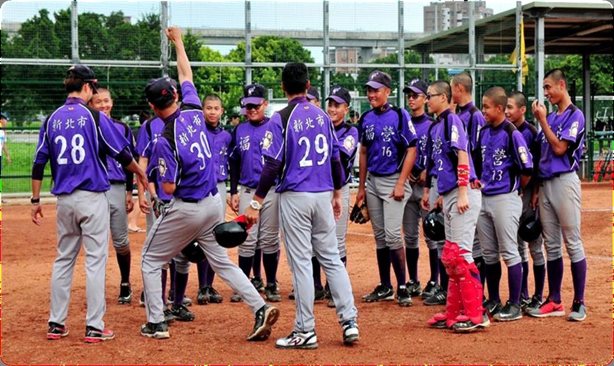

01我的故事
新北市福營國中棒球隊成立於民國92年，於96年成立體育班，選手來源以學區內民安、光華國小為主。學區外則有中港、國泰、興穀、麗林、麗園、正義、忠義等學校及社區棒球好手。目前本校棒球隊畢業校友皆有完善升學管道，本校現任校長楊尚青先生向來注重學生之適性發展，倡導五育均衡教育，對棒球運動全力支持，學務主任蔡友文先生，在經費爭取上不遺餘力，學校家長會全力支援，使球隊無後顧之憂而得以盡情發揮戰力，同時在體育組曹修維組長的全力支援與總教練童琮輝、教練趙文健、黃凱煜的專業帶領訓練之下，必定能給更多熱愛棒球運動的孩子一個發揮的舞台，栽培更多台灣之光，今後仍盼各界的全力支持與愛護，使福營青少棒開花更美結實更甜，並學習秉持著「永不放棄，堅持到底」精神，時時保有學習的心，感恩、惜福是校長及教練們時常叮嚀的話語，培養選手們刻苦耐勞的堅毅性格，更是共同的目標。一併感恩在棒球運動上盡心幫忙支持的諸位朋友，多謝支持謝謝您。

推薦理由
用愛灌溉未來的種子——誠摯邀請企業與社會各界支持福營國中棒球隊
孩子是國家未來的希望，教育則是成就夢想的起點，福營國中棒球隊一路走來，始終堅持在課業與運動間找到平衡，讓每位球員都能在球場上盡情揮灑汗水、磨練意志，寫下屬於自己的精彩篇章。
本校棒球隊自創隊以來已邁入第23年，在歷任校長與行政團隊的用心支持下，我們持續培育無數懷抱夢想的少年，並在全國賽事中屢創佳績，更孕育出多位職棒選手，證明只要有舞台，孩子就能展現無限潛力。
棒球是一項需要高度投入的團隊運動，從器材汰換、營養補給、訓練資源到各地移地比賽的旅費，處處都需仰賴穩定支持。儘管有政府補助，但因經費用途侷限，仍難以全面涵蓋球隊的各項需求。
我們誠摯邀請企業與社會各界朋友加入支持行列，成為孩子逐夢路上的夥伴，您的支持，不僅提供實質的資源，更傳遞了對教育、體育與青少年成長的關懷與肯定，每一份心意，都是孩子邁向更好未來的力量。
讓我們攜手灌溉夢想的種子，共同為下一代點燃希望，迎向更美好的明天！